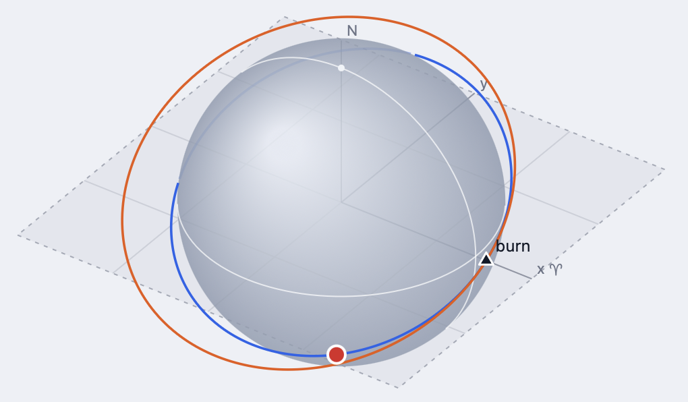

Orbital Maneuvers Calculator

Interactive visualization of impulsive maneuvers. Define the central body and the initial orbit, and explore
different types of maneuvers and orbital transfers. The result is shown as an interactive 3D view.
Open the calculator →